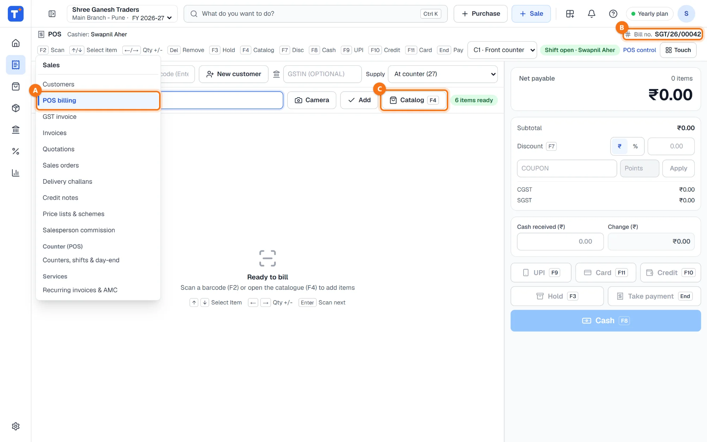
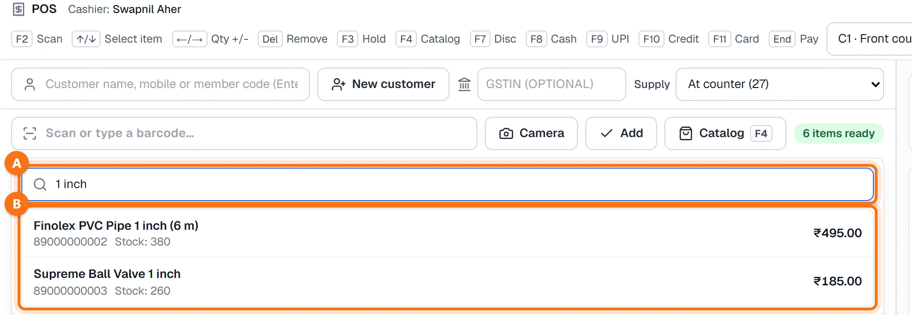
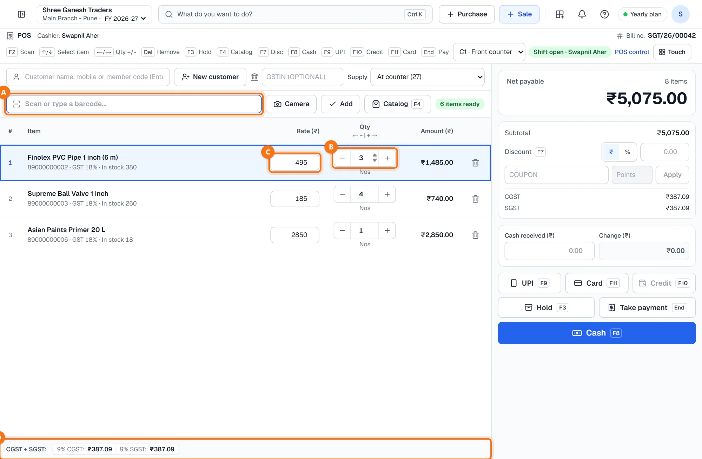
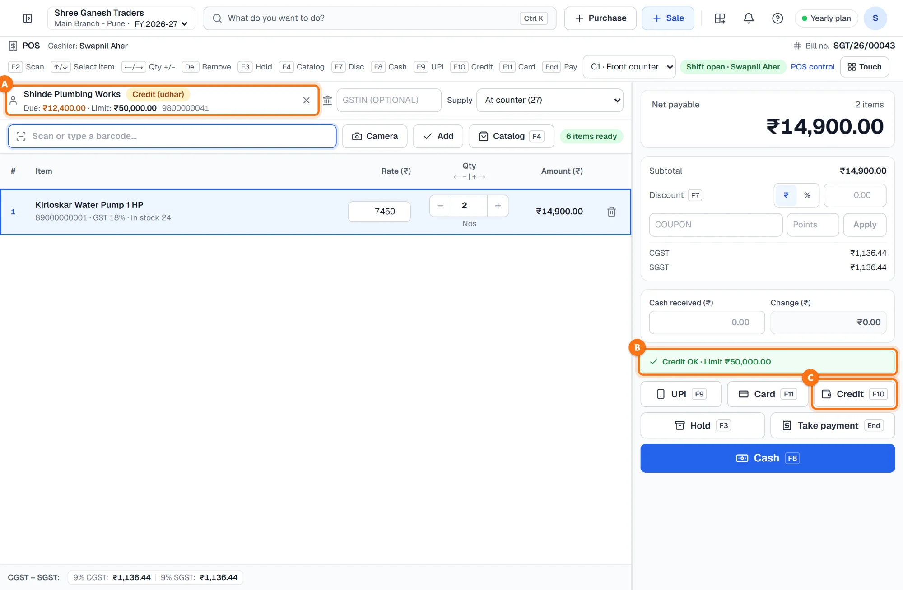
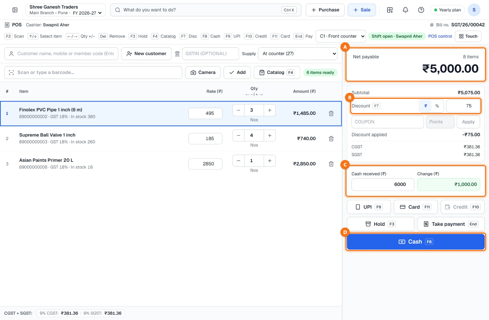
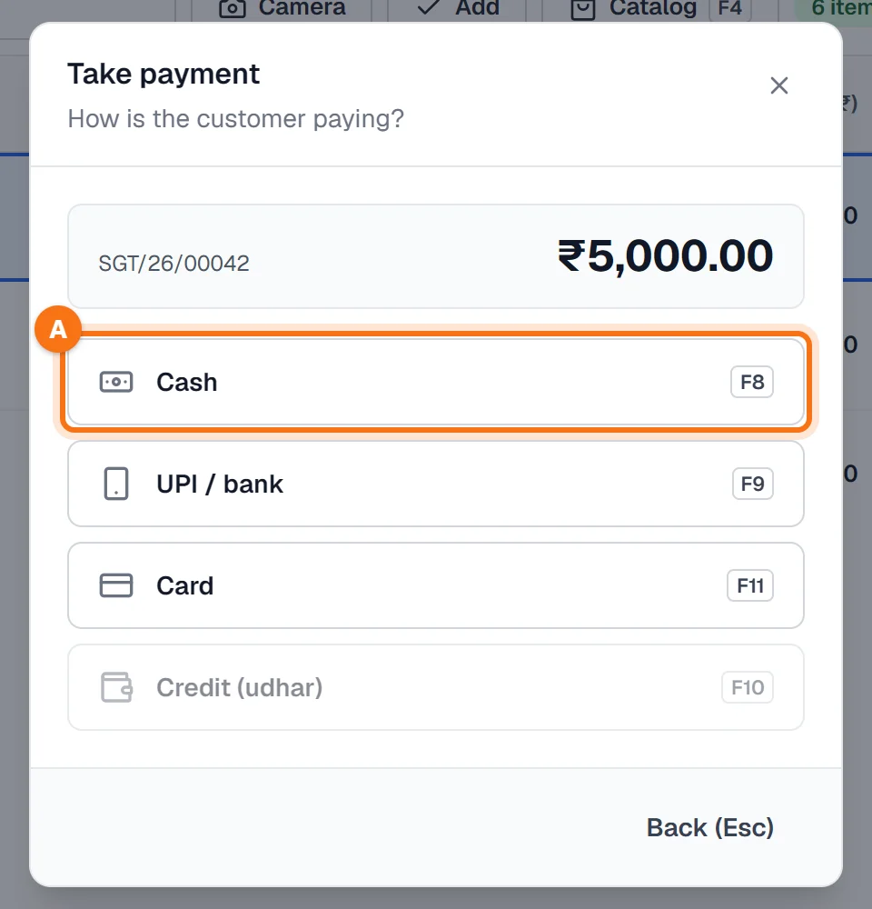
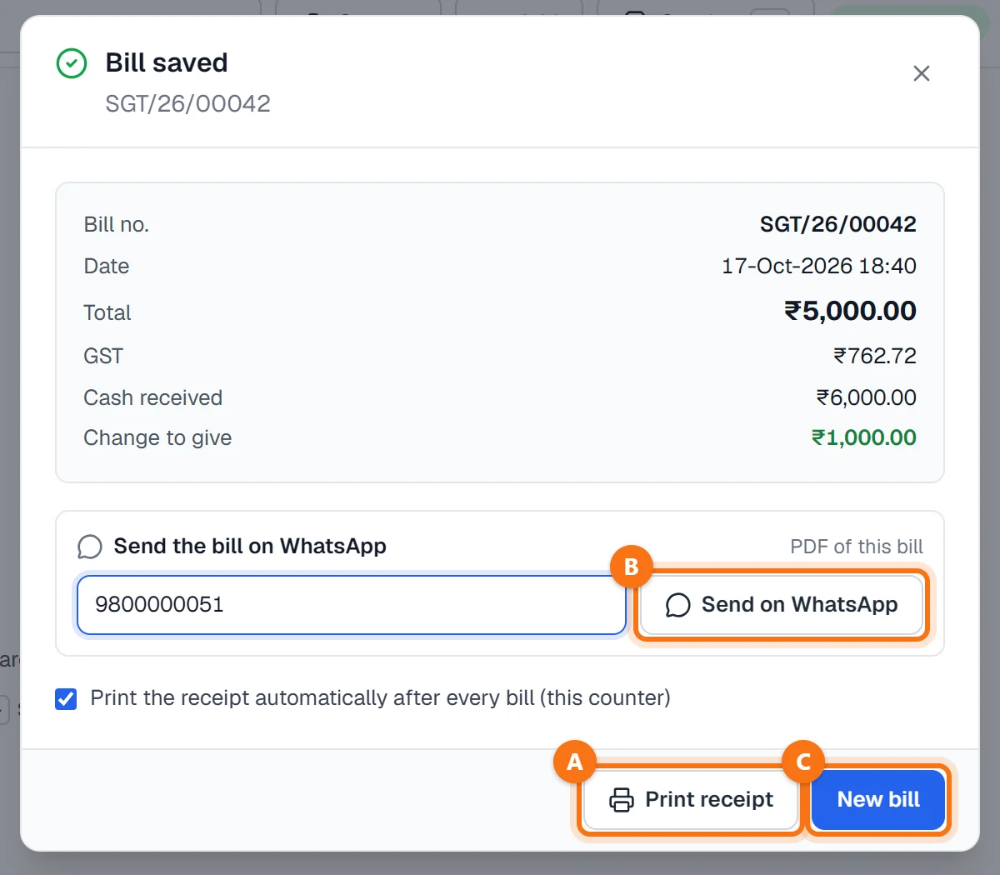
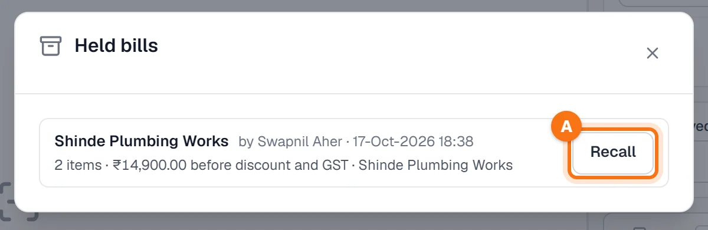

Techstar ERP मराठी आणि हिंदीतही वापरता येतो. वर उजवीकडे तुमच्या नावाच्या आद्याक्षराच्या गोल बटणावर click करा → Language (भाषा) → मराठी. ERP चा menu मराठीत दिसतो (उदा. Sales = विक्री). बिले आणि इतर कायदेशीर कागदपत्रे नेहमीप्रमाणेच छापली जातात. या guide मधले screenshots English menu चे आहेत.
सुरू करण्यापूर्वी
आयटम item master मध्ये विक्री दरासह असावेत (Items & stock → Items); आयटमला बारकोड असेल तर तो स्कॅन करता येतो. काउंटरवर विक्री दर म्हणजे GST सकट किंमत, MRP सारखी; त्यातून GST ERP स्वतः वेगळा काढतो.
काउंटर आणि शिफ्ट ऐच्छिक आहेत. तुमच्या दुकानात ते असतील (Sales → Counters, shifts & day-end) तर स्क्रीनच्या वर या कॉम्प्युटरचा काउंटर निवडा आणि गल्ल्यातली सुरुवातीची रोख टाकून शिफ्ट उघडा.
POS billing उघडा
डाव्या menu मध्ये Sales → POS billing A वर click करा (मराठी menu मध्ये: विक्री → POS बिलिंग), किंवा कोणत्याही स्क्रीनवर F8 दाबा. बिलाला जास्त जागा मिळावी म्हणून काउंटरवर menu फक्त icons चा होतो; icon वर माउस नेला की त्यातल्या स्क्रीन दिसतात.
वरच्या पट्टीत cashier, कीज आणि पुढचा बिल नंबर B दिसतो. बिल save झाल्यावरच नंबर पक्का होतो, त्यामुळे मालिकेत गॅप येत नाही. स्कॅन बॉक्सजवळचे Catalog C आयटम शोध उघडते, आणि हिरवा बॅज (उदा. 6 items ready) म्हणजे आयटम आणि स्टॉक या कॉम्प्युटरवरच ठेवलेले आहेत, त्यामुळे स्कॅनिंगला इंटरनेटची वाट पाहावी लागत नाही.

आयटम स्कॅन करा किंवा शोधा
बारकोड स्कॅन करा — स्क्रीनवर कुठेही असलात तरी स्कॅनर चालतो, Scan or type a barcode… बॉक्स तो पकडतो. प्रत्येक स्कॅनला एक नग वाढतो; तोच आयटम पुन्हा स्कॅन केला तर आणखी एक. एकदम जास्त नग टाकायचे असतील तर नग, स्टार आणि बारकोड टाइप करा, उदा. 4 नगांसाठी 4*89000000003.
बारकोड नाही? F4 दाबा किंवा Catalog वर click करा, नावाची किमान दोन अक्षरे टाइप करा A, मग बाणाच्या कीज आणि Enter ने किंवा click करून आयटम निवडा B. यादीत बारकोड, स्टॉक आणि दर दिसतो.

फोन किंवा टॅबलेटवर Camera ने कॅमेऱ्यातून बारकोड स्कॅन करता येतो (ब्राउझर सपोर्ट करत असेल तर), आणि Touch ने मोठ्या आयटम टाइल्स दिसतात, त्यांवर बोटाने टॅप करा.
नग आणि दर तपासा
प्रत्येक आयटम cart मध्ये एक ओळ म्हणून येतो — बारकोड, GST दर आणि हातातला स्टॉक सह. प्रत्येक आयटमनंतर cursor परत स्कॅन बॉक्समध्ये A जातो, पुढच्या आयटमसाठी तयार.
- नग B: − किंवा + वर click करा, ← / → दाबा, किंवा टाइप करा. 0.5 kg सारखे अर्धे नगही चालतात.
- दर C: GST सकट विक्री दर. या बिलापुरता तो बदलू शकता.
- बिनच्या icon ने किंवा Del ने ओळ काढा. ↑ / ↓ ने ओळींमध्ये फिरा.
खालच्या पट्टीत D बिलाचा GST दरानुसार दिसतो: तुमच्याच राज्यातील विक्रीसाठी CGST + SGST, नाहीतर Inter-State बॅजसह IGST.

लाल Short by बॅज म्हणजे या शाखेतील स्टॉकपेक्षा cart मध्ये जास्त नग आहेत. बिल save करताना server स्टॉक पुन्हा तपासतो.
ग्राहक (हवा असल्यास)
Walk-in ग्राहक असेल तर Customer रिकामा ठेवू शकता. बिलावर ग्राहक टाकायचा असेल तर नाव, मोबाईल नंबर किंवा member code टाइप करून Enter दाबा. उधारीवर घेणाऱ्या ग्राहकांना Credit (udhar) बॅज A असतो, सोबत त्यांची बाकी आणि क्रेडिट मर्यादा दिसते.
उधारीच्या ग्राहकासाठी एक बॉक्स B मर्यादा तपासतो: हिरव्या रंगात Credit OK, किंवा ग्राहकाचे क्रेडिट बंद असेल, मर्यादा ₹0 असेल किंवा या बिलाने बाकी मर्यादेपेक्षा जास्त जात असेल तर लाल. Credit बटण C फक्त हिरवा बॉक्स असतानाच चालते.

- नवीन ग्राहक: New customer वर click करा, Full name, Mobile आणि असेल तर GSTIN टाका. उधार द्यायचे असेल तर Gets credit (udhar) वर टिक करा आणि Credit limit (₹) टाका — ₹0 म्हणजे उधार नाही. Save वर click करा.
- व्यवसायाला बिल: ग्राहकाचा GSTIN GSTIN (optional) मध्ये टाका. मग टॅक्स GSTIN मधील राज्यानुसार लागतो.
- माल दुसऱ्या राज्यात पोहोचवायचा आहे: GSTIN नसलेल्या ग्राहकासाठी Supply मध्ये At counter ऐवजी Deliver to … ते राज्य निवडा. मग बिलावर IGST लागतो.
सूट, रोख आणि सुट्टे पैसे
उजवीकडे घ्यायची रक्कम, Net payable A, आणि ती कशी बनली ते दिसते.
- सूट B: F7 दाबा, ₹ किंवा % निवडा आणि टाइप करा. GST मोजण्याआधी सूट सगळ्या ओळींवर वाटली जाते, त्यामुळे GST पण कमी होतो.
- रोख आणि सुट्टे C: ग्राहकाने दिलेली रक्कम Cash received (₹) मध्ये टाका; किती परत द्यायचे ते Change (₹) मध्ये दिसते.
- कूपन किंवा लॉयल्टी पॉइंट सूटीच्या खाली टाकून Apply ने तपासता येतात.
मोठे Cash बटण D (F8) बिल रोख विक्री म्हणून save करते — पेमेंटच्या इतर पद्धती पुढच्या स्टेपमध्ये.

पेमेंट घ्या
एकच की दाबली की पेमेंटच्या पद्धतीसह बिल save होते: F8 Cash (रोख), F9 UPI, F11 Card किंवा F10 Credit (उधार — फक्त उधारीच्या ग्राहकांसाठी). बटणांवर click केले तरी चालते.
किंवा End (Take payment) दाबा, एकूण रक्कम पाहा आणि निवडा: Cash A, UPI / bank, Card किंवा Credit (udhar). Back (Esc) ने परत बिलावर याल.

Cashier लॉगिन: दर बदलला, 10% पेक्षा जास्त सूट दिली किंवा उधारीचे बिल मर्यादेपेक्षा जास्त गेले तर मॅनेजरची मंजुरी लागते. Cashier ला Manager approval needed दिसते, तो Send for approval वर click करतो; मॅनेजर मंजूर करेपर्यंत बिल Approvals मध्ये थांबते.
GSTIN नसलेले मोठे बिल: ₹50,000 किंवा जास्त (taxable value) असेल तर बिलावर ग्राहकाचे नाव आणि पत्ता असणे आवश्यक आहे, म्हणून ERP ते विचारतो.
पावती, WhatsApp आणि पुढचे बिल
बिल नंबरसह save होते आणि 80 mm पावती लगेच प्रिंट होते. Bill saved विंडोमध्ये एकूण रक्कम, GST आणि मिळालेली रोख टाकली असेल तर परत द्यायचे सुट्टे दिसतात.
- Print receipt A ने पावती पुन्हा प्रिंट होते.
- ग्राहकाचा मोबाईल टाकून Send on WhatsApp B वर click करा — बिलाची PDF जाते.
- New bill C ने पुढच्या ग्राहकासाठी काउंटर रिकामा होतो.
- या काउंटरवर प्रिंटर नाही? Print the receipt automatically after every bill (this counter) वरची टिक काढा.

बिल save झाल्यावर स्टॉक कमी होतो, विक्री GST सह तुमच्या हिशोबात नोंदवली जाते आणि — उधारीच्या बिलात — ग्राहकाची बाकी वाढते. मालासाठी ई-वे बिल लागत असेल तर Bill saved ऐवजी ई-वे बिलाची विंडो येते; पहा ई-वे बिल कसे बनवायचे.
बिल hold करा आणि परत आणा
ग्राहक आणखी एक वस्तू आणायला गेला? F3 दाबा किंवा Hold वर click करा. बिल बाजूला ठेवले जाते आणि पुढच्या ग्राहकासाठी काउंटर मोकळा होतो. वर उजवीकडे संख्येसह Held bills बटण दिसते.
Held bills आणि Recall A वर click करा — बिल त्याचे आयटम, ग्राहक आणि सूटसह परत येते. Hold केलेली बिले server वर ठेवली जातात, त्यामुळे शाखेतील कोणत्याही काउंटरवरून ती परत आणता येतात.

कीबोर्ड शॉर्टकट
| कीज | काय होते |
|---|---|
| F8 (इतर कोणत्याही स्क्रीनवर) | POS billing उघडते |
| F2 | स्कॅन बॉक्समध्ये जा |
| F4 | Catalogue शोध उघडा किंवा बंद करा |
| ↑ / ↓ | Cart च्या ओळींमध्ये फिरा |
| ← / → किंवा - / + | निवडलेल्या ओळीचे नग कमी / जास्त |
| Del | निवडलेली ओळ काढा |
| F7 | सूटीवर जा |
| F3 | बिल hold करा |
| F8 / F9 / F10 / F11 | बिल Cash / UPI / Credit / Card म्हणून save करा |
| End | Take payment विंडो |
| Esc | उघडा शोध किंवा विंडो बंद करा |
नेहमीचे प्रश्न
काउंटरवरच्या किमतीत GST धरलेला असतो का?
Credit बटण फिके (बंद) का आहे?
बिल करताना इंटरनेट गेले तर काय होते?
काउंटरचे बिल पुन्हा प्रिंट, परत किंवा रद्द कसे करायचे?
उधारीचे ग्राहक कुठे जोडायचे आणि त्यांची बाकी कशी घ्यायची?
आणखी guides
Screenshots Techstar ERP मधील demo कंपनीचे आहेत (Shree Ganesh Traders, Pune). सर्व नावे, GSTIN, रकमा आणि कागदपत्रांचे नंबर नमुना माहिती आहेत.